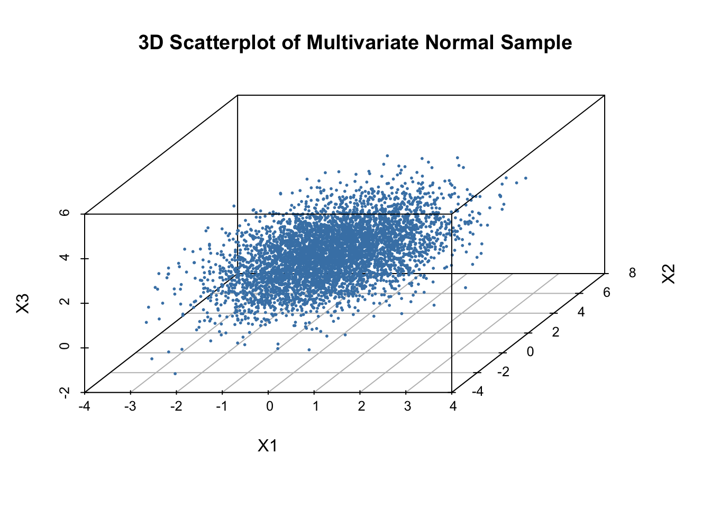

23Linear Transformations and the Multivariate Normal
Linear transformations play a central role in probability and statistics, especially when working with multivariate normal distributions. In earlier sections, we saw how a linear transformation of two independent standard normals can create correlation. Here, we generalise that idea and show how any multivariate normal distribution can be constructed from a standard one using a matrix transformation.
Why This Matters
Linear transformations of multivariate normals underpin:
simulation of correlated variables,
regression and linear models,
principal component analysis (PCA),
Bayesian multivariate priors,
and nearly all multivariate statistical methods.
This section forms the conceptual bridge between probability theory and practical statistical modelling.
23.1 Linear Transformations of Random Vectors
Let \[
\mathbf{X} = (X_1, X_2, \dots, X_k)^\top
\] be a random vector, and let \(A\) be a fixed \(m \times k\) matrix. A linear transformation of \(\mathbf{X}\) is
\[
\mathbf{Y} = A\mathbf{X} + \mathbf{b},
\] where \(\mathbf{b}\) is a constant vector.
This transformation:
rotates, stretches, or compresses the space,
shifts the mean by \(\mathbf{b}\),
and reshapes the covariance structure through the matrix \(A\).
23.2 The Multivariate Normal Distribution
A random vector \(\mathbf{X}\) is multivariate normal if every linear combination of its components is normally distributed.
If \[
\mathbf{X} \sim N(\boldsymbol{\mu}, \Sigma),
\] then:
\(\boldsymbol{\mu}\) is the mean vector,
\(\Sigma\) is the covariance matrix (symmetric and positive‑definite).
set.seed(1234)# 3D mean and covariancemu <-c(0, 1, 2)Sigma <-matrix(c(1, 0.5, 0.2,0.5, 2, 0.3,0.2, 0.3, 1), 3, 3)n <-5000# Cholesky factor L^TL <-chol(Sigma)# Standard normalsZ <-matrix(rnorm(3*n), n, 3)# Construct X = Z L^T + muX <- Z %*% L +matrix(mu, n, 3, byrow =TRUE)# Quick diagnostic: sample covarianceround(cov(X), 2)
The sample covariance of \(X\) matches \(\Sigma\).
The construction works in any dimension.
set.seed(1234)# 3D mean and covariancemu <-c(0, 1, 2)Sigma <-matrix(c(1, 0.5, 0.2,0.5, 2, 0.3,0.2, 0.3, 1), 3, 3)n <-5000# Cholesky factor L^TL <-chol(Sigma)# Standard normalsZ <-matrix(rnorm(3*n), n, 3)# Construct X = Z L^T + muX <- Z %*% L +matrix(mu, n, 3, byrow =TRUE)# 3D scatterplotlibrary(scatterplot3d)scatterplot3d(X[,1], X[,2], X[,3],pch =16, cex.symbols =0.4,color ="steelblue",main ="3D Scatterplot of Multivariate Normal Sample",xlab ="X1", ylab ="X2", zlab ="X3")

A 3D elliptical cloud whose shape reflects the covariance matrix.
The cloud is tilted and stretched in directions determined by \(\Sigma\).
This visually reinforces the idea that \(X=LZ+\mu\).